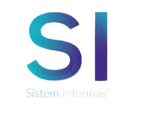

SEKOLAH TINGGI TEKNOLOGI TERPADU NURUL FIKRI
Kampus IT yang Siap Menjadi Perintis Teknologi Digital Masa Depan

Kampus nya bagus, disini memiliki prinsip NICE.
Bagi yang beragama Islam berkah sekali masuk kemari, karena Kampus nya bernuansa Islam.
Kami Memiliki 3 Program Studi
Berikut Beberapa Peminatan Prodi Teknik Informatika :
- Software Engineering
- Data Engineering
- Network Engineering
- Cyber Security
Berikut Beberapa Peminatan Prodi Sistem Informasi :
- Design Komunikasi Visual
- Bisnis Sistem Enterprise
- E-Bussiness

Berikut Beberapa Mata Kuliah Prodi Bisnis Digital :
- Ekonomi Digital
- Manajemen
- Big data dan bisnis digital
- Desain Inovasi
- UI/UX Design
- Komunikasi Bisnis
- Supply Chain
- Akuntansi
- Statistik Dasar
Social Media


INGIN TAHU LEBIH LANJUT?
Kamu bisa mendapatkan info selengkapnya dengan tekan tombol dibawah ini.
Gedung A STT Terpadu Nurul Fikri
- Jl. Setu Indah No.116, Tugu, Kec. Cimanggis, Kota Depok, Jawa Barat 16451
- 021 - 786 3191
- info@nurulfikri.ac.id
Gedung B STT Terpadu Nurul Fikri
- Jl. Raya Lenteng Agung No.20, RT.4/RW.1, Srengseng Sawah, Kec. Jagakarsa, Kota Jakarta Selatan, DKI Jakarta 12640
- 021 - 786 3191
- +62 857 1624 3174
- info@nurulfikri.ac.id